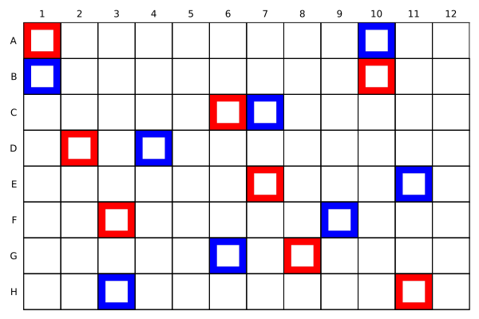

Quickstart
PlateArrays.jl helps you place positive and negative controls on microwell plates. You provide the active wells on the plate and the number of controls to place; place_controls optimizes their locations and returns a PlateArray.
Create an active plate mask
A plate is represented by a BitMatrix mask, where true means a well is active (available) and false means it is inactive.
For a full 96-well plate:
wells = trues(8, 12)For a full 384-well plate:
wells = trues(16, 24)You can also mark some wells as inactive. For example, to exclude the first and last columns:
wells = trues(8, 12)
wells[:, 1] .= false
wells[:, end] .= falsePlacing controls on a single plate
Use place_controls with the plate mask, the number of positive controls, and the number of negative controls.
plate = place_controls(wells, 8, 8)This places 8 positive controls and 8 negative controls on the active wells of the plate.
The result is a PlateArray:
PlateArray objects
A PlateArray stores three BitMatrix objects:
plate.wells
plate.positives
plate.negativesplate.wellsindicates active wells.plate.positivesindicates positive control wells.plate.negativesindicates negative control wells.
Visualizing PlateArrays
Use plot to visualize the plate. By default, positive controls are outlined in blue, and negative in red.
plot(plate)
If a well is inactive, it will appear in a gray color.
Exporting PlateArrays
A PlateArray can be exported as a DataFrame
plate_df = DataFrame(plate)| well | row | col | run | positive | negative |
|---|---|---|---|---|---|
| A1 | 1 | 1 | false | false | true |
| B1 | 2 | 1 | false | true | false |
| C1 | 3 | 1 | true | false | false |
| D1 | 4 | 1 | true | false | false |
Likewise, a properly formatted DataFrame can be converted back into a PlateArray
new_plate = PlateArray(plate_df)Choosing a solver
By default, place_controls uses the "exchange" solver.
plate = place_controls(wells, 8, 8)This is equivalent to:
plate = place_controls(wells, 8, 8; solver = "exchange")Available solvers are:
| Solver | Description |
|---|---|
"exchange" | Default exchange-based optimization solver. |
"MILP" | Mixed-integer linear programming solver. |
To use the MILP solver:
plate = place_controls(wells, 8, 8; solver = "MILP")The MILP solver has unpredictable run times and works best for plate sizes up to 96 well plates.
Choosing an objective
By default, place_controls uses the "hybrid" objective.
plate = place_controls(wells, 8, 8)This is equivalent to:
plate = place_controls(wells, 8, 8; objective = "hybrid")Available objectives are:
| Objective | Description |
|---|---|
"hybrid" | Default weighted combination of the minimax and LHS objectives. |
"minimax" | Minimizes the maximum distance from an active well to its nearest control. |
"LHS" | Finds an approximate Latin hypercube sample of the available wells. |
For example:
plate = place_controls(wells, 8, 8; objective = "minimax")You can combine solver and objective choices:
plate = place_controls(
wells,
8,
8;
solver = "exchange",
objective = "minimax",
)Placing controls with Experiment objects
Experiment objects wrap the number of runs, positive controls, and negative controls into a single object.
experiment = Experiment(80, 8, 8)This represents:
- 80 experimental runs
- 8 positive controls
- 8 negative controls
You can also call place_controls with Experiment objects.
wells = trues(8, 12)
experiment = Experiment(80, 8, 8)
plate = place_controls(wells, experiment)Scheduling multiple experiments with arrayer
Use arrayer to schedule multiple experiments across one or more plates.
plate_arrays = arrayer(wells, experiment1, experiment2, experiment3)arrayer executes three scheduling tasks:
- Assigns experiments to as few plates as possible.
- Partitions plates that contain multiple experiments.
- Places the requested positive and negative controls for each experiment on each plate with
place_controls.
The result is a matrix of PlateArray objects with dimensions E × P, where:
Eis the number of experimentsPis the number of plates used
Each entry plate_arrays[e, p] contains the layout for experiment e on plate p.
Example: arraying multiple experiments
using PlateArrays
# Define a full 96-well plate.
wells = trues(8, 12)
# Define several experiments.
expt1 = Experiment(40, 4, 4)
expt2 = Experiment(32, 4, 4)
expt3 = Experiment(80, 8, 8)
# Assign experiments to plates and place controls.
plate_arrays = arrayer(wells, expt1, expt2, expt3)Inspect the number of experiments and plates:
size(plate_arrays)The first dimension corresponds to experiments, and the second dimension corresponds to plates.
For example:
plate_arrays[1, 1]returns the PlateArray for the first experiment on the first plate.
If an experiment is not assigned to a particular plate, the corresponding PlateArray will contain no active wells.
Example: irregular plates
The active wells do not need to form a full plate. This example excludes the outer border of a 96-well plate:
using PlateArrays
wells = trues(8, 12)
wells[1, :] .= false
wells[end, :] .= false
wells[:, 1] .= false
wells[:, end] .= false
plate = place_controls(wells, 4, 4)Controls are placed only where wells is true.